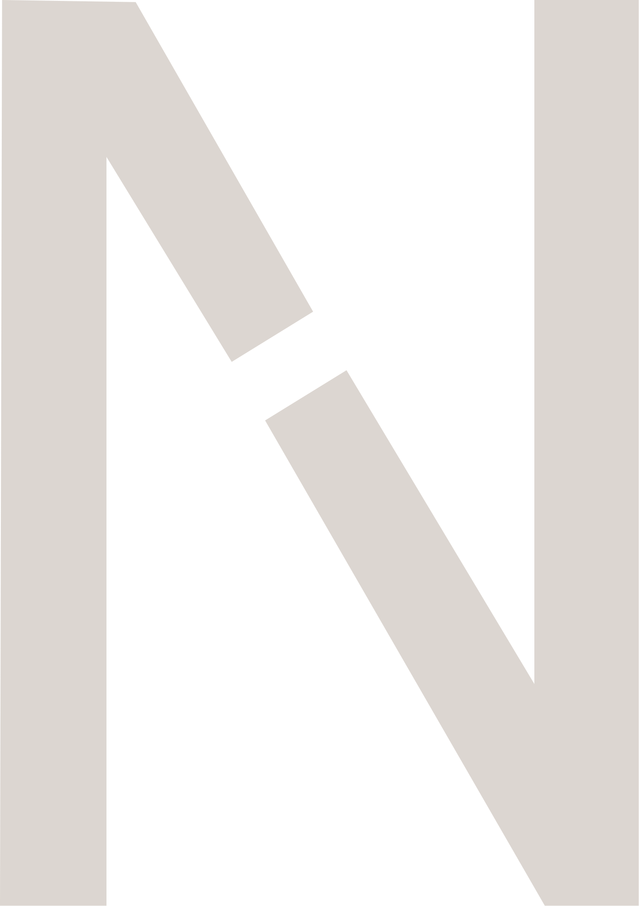
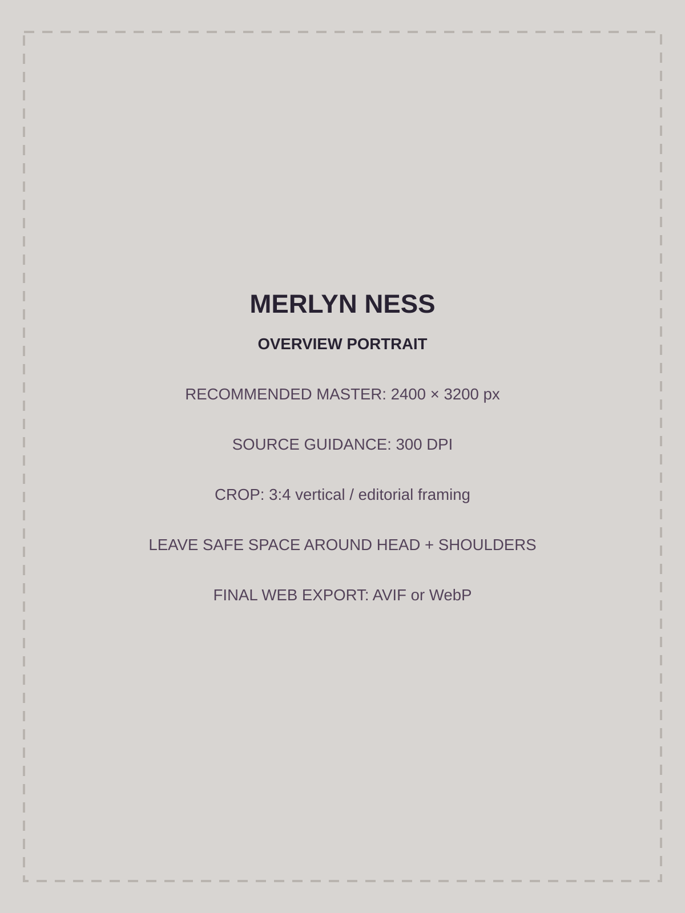
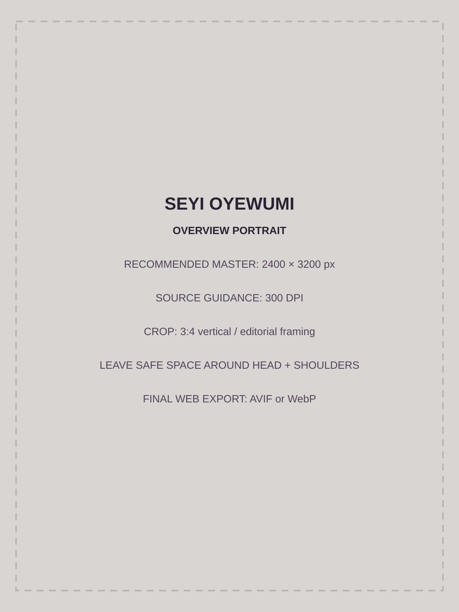
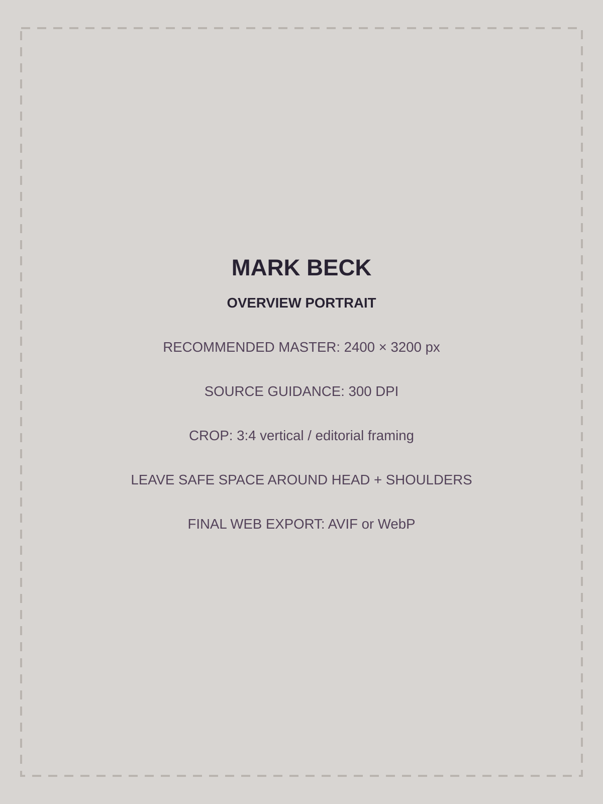

Strengthening what you’ve built. Shaping it for what comes next.
Noble is an advisory group for business owners considering what comes next.
Our role is to bring an outside perspective, helping you understand where the business stands, what deserves attention, and what choices are available to you.
Noble stays on your side of the table.
No two businesses arrive at the same place in the same way. Noble begins by understanding yours, then stays alongside you as the work takes shape around the direction you want to pursue.
The questions stay consistent.Your answers shape what comes next.
Each question brings a different part of your business into focus. Together, your answers help Noble understand what matters to you, what is shaping your business today, and what deserves closer attention to support the direction you want to pursue.
Where you want the business to go changes what needs attention now. Even when the destination is not fully decided, the possibilities you are considering help clarify what matters most and where to focus first.
The value of your business is being shaped every day by the decisions you make, often before you can see the effect. Understanding what is strengthening the business, and what may be weakening it, helps you protect what is working, improve what is not, and make future decisions from a stronger position.
The role you play in the business matters, but so does what happens when you are not there. Understanding where the business depends on you helps clarify what needs to become stronger, giving you more choice in the role you choose to play.
On paper, a transition can look successful and still miss what matters to you. Knowing what you want to protect and what you want the transition to make possible gives you a clearer basis for the decisions that shape the outcome.
From clarity to action.
You know your business from the inside. Noble brings an outside perspective to your side of the table, putting strengths, dependencies, and possibilities into clearer view.
Understand
Understand where your business is today, what matters to you, and what may be possible from where you stand.
A clearer view of where things stand, what deserves closer attention, and what the next stage needs to examine.
Assess
Look at what is shaping your business today, the possibilities you are considering, and what may need to change.
A grounded view of the business today, the factors most relevant to your direction, and the areas that deserve attention, captured in your Ownership Transition and Continuity Report.
Shape
Turn what we have learned into clear priorities and shape a practical path forward around your business and the direction you want to pursue.
A clear path forward: what deserves attention, what comes first, what can wait, and how the work connects to the outcome you want to pursue.
Move
Priorities become actions, with each step connected to you, your business, and what you are working toward.
Progress toward the outcome that matters, with the right work happening in the right order, the right expertise involved when needed, and Noble staying alongside you as decisions are carried through.
Specialist integration
Noble does not try to be every specialist. When the work requires legal, accounting, valuation, lending, technology, or other expertise, Noble helps bring the right perspective into the conversation.
Three Perspectives.One Mandate.
The outcome that matters to you.
Noble is an advisory collective, bringing three distinct perspectives together around you and your business.

Merlyn Ness, MBA
Entrepreneurship · Operations · Transition Support
Owner-facing advisory grounded in practical experience with entrepreneurs, business owners, operations, and transition support.
Get to Know Merlyn
Seyi Oyewumi, EMBA
Strategy · Diagnostics · Ecosystem
Applied research, structured diagnostics, continuity, succession readiness, and a focus on what makes businesses transferable, not just valuable.
Get to Know Seyi
Mark Beck, MBA
Transaction · Capital · Financial Strategy
More than 25 years of financial and management experience across banking, transactions, capital, CFO leadership, auditing, and management accounting.
Get to Know MarkLet's talk about what comes next.
You do not need to have every answer before you begin. Noble can start with what you know, what you are considering, and what you want to understand more clearly.
Connect With Noble